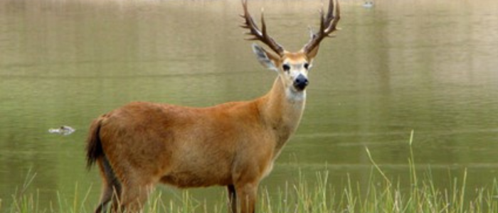
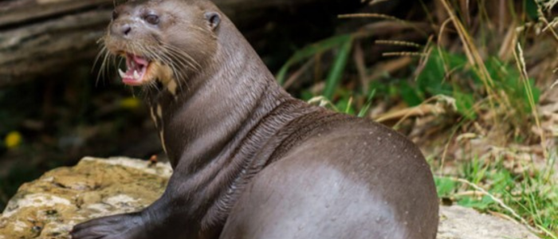

A Fauna do Pantanal

Entre os animais do Pantanal, estão espécies encontradas também em diversos biomas vizinhos. Apesar
de serem encontradas populações numerosas de algumas espécies, há poucos registros de endemismo
nesse bioma. Entre as espécies animais mais conhecidos dele, estão: o cervo-do-pantanal, a
onça-pintada, o jacaré-do-pantanal, o tuiuiú, o tamanduá-bandeira, o dourado, o tuiuiú e a ariranha.
O tuiuiú é considerado um símbolo pantaneiro.
O Pantanal é considerado um santuário da biodiversidade brasileira mesmo sendo o menor dos biomas no
país em área (150 mil km²). Ele está distribuído nos estados do Mato Grosso e Mato Grosso do Sul e é
considerado a sexta maior área inundada do mundo."
TUIUIÚ: A AVE SÍMBOLO DO PANTANAL
O tuiuiú (Jabiru mycteria) é uma cegonha encontrada desde o sul do México até o norte da Argentina,
mas 50% da população está no Brasil, principalmente na planície pantaneira. Com pernas longas, bico
comprido, cabeça preta, corpo branco e uma faixa vermelha no pescoço, é uma ave que,
definitivamente, marca presença. Por ser uma cegonha, voa com suas pernas e pescoço esticados,
diferentemente das garças, que tem seus pescoços encolhidos durante o vôo.
Chega a 1,60 metros de altura e impressionantes 3 metros de envergadura, além de pesar até 8 kg. É a
maior ave da maior planície inundável do mundo com a capacidade de voar. Não é a toa que o tuiuiú é
considerado o símbolo do Pantanal. E é oficial, segundo a Lei 5950/1992.
Sua alimentação é basicamente composta por moluscos, peixes, répteis, insetos e até pequenos
mamíferos. Podem também se alimentar de pescado morto, ajudando a evitar que peixes que morrem por
falta de oxigênio nas épocas de seca entrem em estado de putrefação.
CERVO-DO-PANTANAL: O ANIMAL EM EXTINÇÃO
O cervo-do-pantanal é o maior veado da América do Sul, com quase 200 cm de comprimento e até 2,1
metros de altura, incluindo os chifres, que medem de 40 a 45 cm. Os machos são maiores que as
fêmeas, chegando a pesar 130 kg, além de possuírem chifres e o pescoço mais musculoso. Ele
Alimenta-se, principalmente, de gramíneas e plantas aquáticas e semi-aquáticas. Onças-pintadas,
onças-pardas e sucuris podem predar cervos adultos, e o lobo-guará pode predar os seus filhotes.
Em geral, vive em áreas pantanosas e em savanas sazonalmente inundadas. Evita florestas e seleciona
áreas entre 30 e 60 cm de profundidade. No Pantanal, eles se dispersam na cheia e concentram-se
perto de rios e áreas alagadas na seca. Possuem hábitos diurnos, com picos de atividade no início da
manhã e final da tarde, evitando horários mais quentes. Porém, podem mudar seus hábitos para
noturnos em regiões mais antropizadas, nas quais há a pressão de caçadores. Saltam com grande
desenvoltura e nadam bem, podendo atravessar grandes rios. As fêmeas formam pequenos grupos
familiares e os machos são mais solitários.
ARIRANHA: MESTRE DOS RIOS E GUARDIÃS DAS ÁGUAS
A ariranha (Pteronura brasiliensis), também conhecida como lontra-gigante, é um animal vertebrado,
pertencente à classe Mammalia, família Mustelidae e subfamília Lutrinae, a família das lontras. A
ariranha habita ambientes de água doce e sua distribuição ocorre pela América do Sul, em países como
o Brasil, Peru, Colômbia, Paraguai, Suriname, Venezuela, entre outros.
A ariranha apresenta o corpo longo coberto por uma pelagem densa e de cor marrom com uma mancha
branca no pescoço, uma cauda robusta e achatada, que a auxilia na natação, e tamanho que varia entre
1,5 e 1,8 metro. Assim como a cauda, a ariranha possui outras características que a ajudam na
natação, como membranas interdigitais, localizadas entre os seus dedos.
As ariranhas habitam ambientes de água doce, como rios, lagos e suas margens. Geralmente elas buscam
locais onde há águas mais calmas; menos ação antrópica; maior abundância de alimentos; margens com
declives suaves; e vegetação mais densa.
A ariranha tem hábitos diurnos e alimenta-se preferencialmente de peixes, podendo estar incluídos
também em sua alimentação crustáceos, moluscos e pequenos vertebrados, como alguns mamíferos, aves e
répteis.